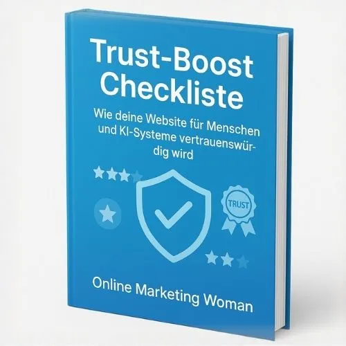

Bewirb das Freebie "SEO-Leitfaden". Profitiere von 3 Upsells
Produktprofil · Marktplatz-Daten 2026-10-14 · Verkaufsseiten-Recherche 2026-10-14 · Kategorien: Marketing Services
- Bewirb das Freebie "SEO-Leitfaden". Profitiere von 3 Upsells ist ein/e E-Book in Marketing Services, vertrieben über den Digistore24-Marktplatz von Anbieter onlinemarketingwoman, gelistet seit 2025-05-09.
- Listenpreis $0.00 (single payment) — Checkout, Auslieferung und Rückerstattungen laufen über Digistore24 selbst, nicht über den Anbieter.
- Käuferschutz: keine standardisierte Garantie-Formulierung gefunden — Rückerstattungsbedingungen vor der Zahlung auf der offiziellen Seite prüfen.
Interesse an Bewirb das Freebie "SEO-Leitfaden". Profitiere von 3 Upsells? Aktueller Preis, Boni und Garantiebedingungen finden Sie auf der offiziellen Seite des Anbieters:
Offizielle Verkaufsseite ansehen
Affiliate-Link (Werbung) — wir verdienen ggf. eine Provision, ohne Mehrkosten für Sie.

Marktplatz-Daten
| Produkttyp | E-Book |
|---|---|
| Preis | $0.00 (Single payment) |
| Garantie/Rückgabe | Laut Verkaufsseite des Anbieters — vor dem Kauf auf der offiziellen Seite prüfen |
| Anbieter | onlinemarketingwoman (gelistet seit 2025-05-09) |
Marktplatz-Beschreibung des Anbieters
Bewirb den SEO-Leitfaden (GRATIS) und erhalte 50% Provision auf Folge-Käufe Der SEO-Leitfaden ist der Einstieg ins KI-Readiness-System: Er holt Website-Betreiber niedrigschwellig ab, liefert sofort nutzbare Quick Wins und führt logisch zu den nächsten Schritten (KI-Readiness, Trust-Boost, GEO). Provision: Du erhältst auf alle nachgelagerten Käufe im Funnel 50% Provision (laut Programmeinstellungen). Worum geht es beim SEO-Leitfaden? Viele Website-Betreiber wollen sichtbarer werden, wissen aber nicht, wo sie anfangen sollen. Der SEO-Leitfaden liefert eine klare, umsetzbare Grundlage: Technik, Content und interne Verlinkung – so aufbereitet, dass Einsteiger sofort ins Tun kommen. Der Leitfaden ist bewusst als GRATIS Einstieg konzipiert: Er baut Vertrauen auf, sorgt für schnelle Erfolgserlebnisse und bereitet die Zielgruppe auf die nächsten Schritte in der KI-Ära vor. Warum braucht das fast jeder Website-Betreiber? SEO ist weiterhin die Basis: Ohne saubere Struktur, Technik und Content verpufft jede weitere Optimierung. Perfekt für Einsteiger: Keine Überforderung, klare To-dos, schnelle Quick Wins. Relevanz für jede Branche: Solo-Selbstständige, KMU, Blogger, Shops, Coaches, lokale Anbieter. Passend zur KI-Ära: Der Leitfaden schafft die Grundlage, damit Inhalte später auch für KI-Readiness, Trust und GEO sauber ausgebaut werden können. Warum lohnt sich das für dich als Affiliate? Extrem niedrige Einstiegshürde: Gratis = hohe Conversion, ideal für kalten Traffic. Perfekt zum Listenaufbau: Funktioniert stark über Social, Blog, Newsletter und Lead-Magnet-Pages. Monetarisierung über Folge-Produkte: Der SEO-Leitfaden führt logisch zu KI-Readiness, Trust-Boost und GEO – dort entstehen die provisionsstarken Sales. Evergreen-Thema: SEO + KI-Sichtbarkeit ist kein kurzer Trend – du kannst es als Serie spielen (Posts, Reels, Newsletter). Affiliate-Support: Promolinks, Copy-Paste Hooks, Newsletter-Text und Social-Captions findest du im Affiliate-/Werbemittelbereich.
Von der Verkaufsseite des Anbieters
Seitentitel: Dein ultimativer SEO Leitfaden – Hol dir die perfekte Landingpage-Checkliste | Online Marketing Woman
Meta-Beschreibung: Jetzt kostenlos herunterladen: Dein 30-seitiger SEO Leitfaden mit 30 Schritten zur perfekten Landingpage. Praxisnah, verständlich, sofort umsetzbar – für mehr Sichtbarkeit & Umsatz.
Hauptüberschrift
Deine Landingpage ist online - aber Google findet sie kaum?
Abschnitts-Überschriften
- Du willst mit SEO anfangen - aber jeder Tipp führt zu drei neuen Fragen
- 30 verständliche Prüfschritte - von der Suchanfrage bis zur technischen Kontrolle
- Kein Fachbuch für SEO-Profis - sondern ein Arbeitsleitfaden für deine eigene Website
- Was sich nach dem Leitfaden für dich verändert
- Du musst nicht SEO, KI-Readiness, Vertrauen und GEO gleichzeitig lösen
- Für einen verständlichen Einstieg - ohne falsche Versprechen
- In drei einfachen Schritten zum kostenlosen SEO-Leitfaden
- Das solltest du vor dem Download wissen
- Hör auf, SEO nur zu sammeln. Fang an, deine Landingpage klar zu prüfen.
Einstiegstext
Mit diesem verständlichen Leitfaden prüfst du deine wichtigste Landingpage in 30 klaren Schritten. Du erkennst typische SEO-Fehler, verstehst die wichtigsten Fachbegriffe und weißt endlich, was du zuerst verbessern solltest.
0 € · kein Abo · keine versteckten Kosten · Bereitstellung über Digistore24
Gerade am Anfang wirkt SEO schnell wie ein riesiges Technikprojekt. Du liest von Keywords, Meta-Daten, Ladezeiten, internen Links und strukturierten Daten - aber niemand sagt dir verständlich, was für deine Landingpage wirklich wichtig ist und in welcher Reihenfolge du vorgehen solltest.
Du hast Zeit in Texte, Bilder und dein Angebot investiert. Trotzdem taucht die Seite bei passenden Suchanfragen nicht oder nur sehr weit hinten auf.
Recherche-Methode: rohes HTML · 2866 Wörter · Qualität: rich · recherchiert am 2026-10-14. Vollständige Recherche-Datei (MD) ↗
Wie Produkte dieser Art geliefert werden
Allgemeiner Hinweis zu diesem Produkttyp (keine anbieterspezifische Anleitung): E-Books auf Digistore24 werden als digitaler Download geliefert (meist PDF/EPUB): direkt nach dem Checkout erhalten Sie einen Downloadlink oder Mitgliederzugang und können auf jedem Gerät lesen. Für die genaue Anwendung von Bewirb das Freebie "SEO-Leitfaden". Profitiere von 3 Upsells sind die offizielle Verkaufsseite und die enthaltenen Materialien maßgeblich.
Gut zu wissen
- Keine Garantie-Formulierung in unserer Recherche gefunden — bestätigen Sie das Rückgabefenster auf der offiziellen Seite, bevor Sie kaufen.
Was ist Bewirb das Freebie "SEO-Leitfaden". Profitiere von 3 Upsells?
Bewirb das Freebie "SEO-Leitfaden". Profitiere von 3 Upsells ist ein/e e-book in der Kategorie Marketing-Dienstleistungen des Digistore24-Marktplatzes, veröffentlicht von Anbieter onlinemarketingwoman und im Verkauf seit 2025-05-09. Der Anbieter beschreibt es so: "Bewirb den SEO-Leitfaden (GRATIS) und erhalte 50% Provision auf Folge-Käufe Der SEO-Leitfaden ist der Einstieg ins KI-Readiness-System: Er holt Website-Betreiber niedrigschwellig ab, liefert sofort nutzbare Quick Wins und führt logisch zu den nächsten Schritte" (Marktplatz-Beschreibung des Anbieters, leicht gekürzt).
Bewirb das Freebie "SEO-Leitfaden". Profitiere von 3 Upsells Preis: was Sie zahlen
Der Marktplatz listet Bewirb das Freebie "SEO-Leitfaden". Profitiere von 3 Upsells zum $0.00 Preis (single payment). Digistore24 fügt im Checkout die gesetzliche Steuer Ihres Landes hinzu — dort sehen Sie den Endbetrag vor der Zahlung. Eine separate Plattformgebühr gibt es nicht; Anbieter können eigene Upsells nach dem Checkout anbieten.
Bewirb das Freebie "SEO-Leitfaden". Profitiere von 3 Upsells Rückerstattung und Geld-zurück-Garantie
Wir haben keine standardisierte Garantie-Formulierung auf der Verkaufsseite gefunden. Rückerstattungen für Digistore24-Käufe laufen über die Plattform: Antrag über den Support-Link in Ihrer Bestell-E-Mail, innerhalb des Garantiezeitfensters, das im Checkout angezeigt wird. Praktischer Rat: Entscheiden Sie innerhalb des Fensters — wenn das Produkt unter den Erwartungen bleibt, erstatten lassen statt irren lassen.
Mechanik im Detail: So funktionieren Digistore24-Rückerstattungen.
Für wen ist Bewirb das Freebie "SEO-Leitfaden". Profitiere von 3 Upsells geeignet?
Basierend auf der Marketing-Dienstleistungen-Einordnung und der single payment-Abrechnung richtet sich Bewirb das Freebie "SEO-Leitfaden". Profitiere von 3 Upsells an Käufer, die marketing-dienstleistungen-Lösungen suchen zum Einstiegspreis. Der ehrliche Test ist nicht die Kategorie, sondern Ihre eigene Situation: Werden Sie es realistisch innerhalb des Garantiefensters nutzen? Wenn ja, ist der Preis eine Investition; wenn nein, ist er Ballast — unabhängig von der Qualität.
Ist Bewirb das Freebie "SEO-Leitfaden". Profitiere von 3 Upsells seriös? Was Sie vor dem Kauf prüfen
Wir bewerten keine Seriosität — das kann niemand, ohne das Produkt zu nutzen. Prüfbare Punkte, alle auf dieser Seite: die Marktplatz-Historie des Anbieters (im Verkauf seit 2025-05-09), die wörtlichen Verkaufsseiten-Auszüge unten (gekennzeichnet als Anbieteraussagen — deren Werbung, nicht unsere Empfehlung), die Garantiebedingungen im Checkout und die Auslieferungsart. Vorsichtsignale bei jedem Angebot: Countdown-Dringlichkeit gepaart mit vagen Rückerstattungsbedingungen, Testimonials ohne Datum und Anbieterseiten, die den Preis bis zum Checkout verstecken.
Wie kommen Sie nach dem Kauf an Bewirb das Freebie "SEO-Leitfaden". Profitiere von 3 Upsells?
Der Checkout läuft über Digistore24. Nach der Zahlung: E-Books auf Digistore24 werden als digitaler Download geliefert (meist PDF/EPUB): direkt nach dem Checkout erhalten Sie einen Downloadlink oder Mitgliederzugang und können auf jedem Gerät lesen. Bewahren Sie die Bestell-E-Mail auf — sie ist Ihr Schlüssel zum/d zur e-book, zu Rückerstattungsanträgen und zum Digistore24-Käufersupport.
Bewirb das Freebie "SEO-Leitfaden". Profitiere von 3 Upsells Erfahrungen: so recherchieren Sie richtig
Die meisten „Erfahrungsberichte" zu Marktplatz-Produkten sind Affiliate-Inhalte — einschließlich Seiten wie dieser, die an Käufen mitverdienen. Behandeln Sie jeden Bericht (auch unseren) als Ausgangspunkt und prüfen Sie gegen Primärquellen: die Verkaufsseite des Anbieters, die Digistore24-Rückerstattungsrichtlinie und — für marketing-dienstleistungen — unabhängige Communities außerhalb des Affiliate-Ökosystems. Auf dieser Seite sind die Verkaufsseiten-Auszüge unten wörtlich zitiert, damit Sie die Aussagen des Anbieters bewerten können, ohne wegzuklicken.
Wie Sie Bewirb das Freebie "SEO-Leitfaden". Profitiere von 3 Upsells sicher kaufen
- Öffnen Sie die offizielle Verkaufsseite und lesen Sie das vollständige Angebot.
- Bestätigen Sie Endpreis und Garantiezeitfenster auf der Digistore24-Kassenseite — sie ist bindend, kein Vergleichsportal.
- Zahlen Sie innerhalb des Digistore24-Checkouts (niemals per Überweisung oder Off-Platform-Links).
- Speichern Sie die Bestellbestätigung; notieren Sie die Rückerstattungsfrist im Kalender.
- Prüfen Sie zügig. Der Digistore24-Käufersupport hilft, wenn der Anbieter nicht reagiert.
Vollständiges Recherche-Archiv für dieses Produkt (Markdown: kompletter Marktplatz-Datensatz + wörtliche Verkaufsseiten-Auszüge): Bewirb das Freebie "SEO-Leitfaden". Profitiere von 3 Upsells — vollständiges Datenarchiv (Markdown-Datei: 54863-bewirb-das-freebie-seo-leitfaden-profitiere-von-3-upsells.md).
- Listenpreis & Abrechnung — Quelle: offizielle Digistore24-Marktplatz-API, Stand 2026-10-14. Maßgeblich für den aktuellen Preis ist immer die Kassenseite.
- Verkaufsseiten-Zitate — Quelle: https://www.online-marketing-woman.de/55-der-ultimative-seo-leitfaden-anmeldung, abgerufen 2026-10-14 (Methode: rohes HTML). Verify: offizielle Seite öffnen.
- Garantie / Rückgabe — vom Anbieter festgelegt; vor dem Kauf auf der Verkaufsseite bestätigen.
- Nicht von uns geprüft: Produktqualität, Ergebnisse, Testimonials — kein Praxistest für dieses Listing durchgeführt.
Häufige Fragen zu Bewirb das Freebie "SEO-Leitfaden". Profitiere von 3 Upsells
Antworten aus dem Marktplatz-Snapshot (2026-10-14) und der Verkaufsseiten-Recherche (2026-10-14); Anbieteraussagen sind inline gekennzeichnet.
Was ist Bewirb das Freebie "SEO-Leitfaden". Profitiere von 3 Upsells?
Bewirb das Freebie "SEO-Leitfaden". Profitiere von 3 Upsells ist ein Angebot des Typs „E-Book" im Digistore24-Marktplatz, Anbieter: onlinemarketingwoman, gelistet seit 2025-05-09. Eingepflegt unter Marketing-Dienstleistungen. Digistore24 wickelt Checkout, Lieferung und Rückgaben ab.
Wie viel kostet Bewirb das Freebie "SEO-Leitfaden". Profitiere von 3 Upsells?
Der Digistore24-Marktplatz listet es für $0.00 (single payment). Preise legt der Anbieter fest und können sich ändern — der Marktplatz-Eintrag oben zeigt den Schnappschuss; die offizielle Verkaufsseite zeigt den aktuellen Preis.
Gibt es eine Geld-zurück-Garantie für Bewirb das Freebie "SEO-Leitfaden". Profitiere von 3 Upsells?
Unsere Verkaufsseiten-Recherche hat keine explizite Garantie-Formulierung gefunden. Viele Digistore24-Produkte bieten 60 Tage Geld-zurück, aber das legt jeder Anbieter selbst fest — bestätigen Sie es auf der offiziellen Verkaufsseite, bevor Sie kaufen.
Ist Bewirb das Freebie "SEO-Leitfaden". Profitiere von 3 Upsells seriös?
Wir bewerten keine Seriosität — wir veröffentlichen überprüfbare Zahlen: Anbieter onlinemarketingwoman (gelistet seit 2025-05-09), mit der vollständigen Verkaufsseiten-Recherche archiviert auf dieser Seite (Anbieteraussagen als solche gekennzeichnet). Lesen Sie unsere 6-Punkte-Bewertungsmethode und entscheiden Sie anhand der Zahlen — oder diskutieren Sie Bewirb das Freebie "SEO-Leitfaden". Profitiere von 3 Upsells auf GitHub.
Wo kann ich Bewirb das Freebie "SEO-Leitfaden". Profitiere von 3 Upsells sicher kaufen?
Nur über die offizielle Verkaufsseite, die auf dieser Seite verlinkt ist (Checkout und Rückgaben laufen über Digistore24). Prüfen Sie dort Preis und Garantie vor der Bestellung. Der Link ist ein Affiliate-Link — der Kauf unterstützt diese Website ohne Mehrkosten für Sie.
Wie erhalte ich Bewirb das Freebie "SEO-Leitfaden". Profitiere von 3 Upsells nach der Zahlung?
Der Checkout läuft über Digistore24: Nach der Zahlung erhalten Sie Ihren Zugang oder Download per E-Mail und in Ihrem Digistore24-Kundenkonto. Lieferdetails für diesen Produkttyp: E-Books auf Digistore24 werden als digitaler Download geliefert (meist PDF/EPUB): direkt nach dem Checkout erhalten Sie einen Downloadlink oder Mitgliederzugang und können auf jedem Gerät lesen. Bei Problemen kann der Digistore24-Käufersupport Ihre Bestellung wiederherstellen.
Alle 50 Käuferfragen zu Marketing-Dienstleistungen — das komplette Kategorie-FAQ.
Bewirb das Freebie "SEO-Leitfaden". Profitiere von 3 Upsells auf Reddit diskutieren
In Community-Threads vergleichen echte Käufer Erfahrungen. Wir verlinken Communities, keine einzelnen Posts — Threads verschwinden, Subreddits bleiben:
- r/Unternehme — deutschsprachige Community mit Diskussionen zu marketing services.
- r/Vertrieb — deutschsprachige Community mit Diskussionen zu marketing services.
- Reddit-Suche nach „Bewirb das Freebie "SEO-Leitfaden". Profitiere von 3 Upsells" — Live-Ergebnisse, von uns nicht beeinflusst.
- Top-„Erfahrungs"-Treffer dieses Jahr — selbst nach Aktualität filtern.
Passendes auf Amazon.de
Physische Produkte und Zubehör, die häufig zusammen mit Bewirb das Freebie "SEO-Leitfaden". Profitiere von 3 Upsells gekauft werden:
- Marketing Bücher auf Amazon.de — Top-Ergebnisse, Amazon-Ranking.
- Bestseller: Marketing Bücher — live Liste von Amazon, von uns nicht kuratiert.
Werbung: Als Amazon-Partner verdient DigistorePicks DE an qualifizierten Käufen (Partner-tag adminstorede-21). Amazon setzt eigene Preise und Provisionen (niedrige einstellige Prozente — weit unter den 30–75% der Digistore24-Anbieter). Amazon ist ein Convenience-Angebot für Sachprodukte, kein Ersatz für das digitale Produkt oben.
Ähnliche Angebote in Marketing-Dienstleistungen

VERA-X AI Business Engine™ ist ein vollständig aufgebautes KI-Business-System für Unternehmen. Statt nur Software zu verkaufen, erhält der Kunde eine komplette


Bis zu 1.046 € Provision pro Empfehlung — mit einem Produkt, das sich von selbst verkauft. Stell dir vor, du empfiehlst ein Produkt, das nicht nur gut konvertie

Verdiene 50% Provision mit der #1 Masterclass für Online-Kurs-Business Promote das kostenlose Online Training „Online Kurse erstellen und passiv verkaufen mit K
Weitere Angebote von onlinemarketingwoman
Neu: Live seit 08.12.2025 Bewirb den ultimativen GEO-Leitfaden und erhalte 50% Provision Der GEO-Leitfaden ist der letzte Schritt im KI-Readiness-System: SEO so

Bewirb das KI-Readiness-System und erhalte auf alle Produkte 50% Provision Die Trust-Boost-Checkliste ist ein zentraler Baustein im KI-Readiness-System : SEO sc

50% Provision!!! Alle wollen diese Schritt für Schritt Anleitung: Warum? Weil jeder mit dieser brandaktuellen Anleitung und den neusten ChatGPTs Tipps innerhalb

Bewirb das KI-Readiness-System und erhalte für alle Produkte 50% Provision Ein vollständiger Funnel aus 4 Produkten , die logisch aufeinander aufbauen: SEO Leit
Ähnliche Suchanfragen
Wo Sie es sich ansehen können
Wo Sie es sich ansehen können
Aktuelle Preise, Garantie und Boni finden Sie auf der offiziellen Verkaufsseite:
Offizielle Verkaufsseite ansehen
Das ist ein Affiliate-Link (Werbung) — kaufen Sie darüber, verdienen wir ggf. eine Provision, ohne Mehrkosten für Sie.
Quellen & weiterführende Informationen
- Offizielle Verkaufsseite (aktueller Preis, Garantie, Boni): www.online-marketing-woman.de/55-der-ultimative-seo-leitfade (Affiliate-Link)
- Öffentliche Digistore24-Produktseite: checkout-ds24.com/product/611758
- Vollständige Recherche-Datei (Markdown, versioniert): content/products/54863-bewirb-das-freebie-seo-leitfaden-profitiere-von-3-upsells.md
- Affiliate-Supportseite des Anbieters: www.online-marketing-woman.de/55-59-60-61-affiliate-support-
- Marktplatz-Kategorie: Marketing-Dienstleistungen
Wie wir Produkte wie Bewirb das Freebie "SEO-Leitfaden". Profitiere von 3 Upsells bewerten
Sechs Prüfungen, ausschließlich mit offiziellen Marktplatz-Zahlen. Die vollständige Bewertungsmethode lesen · unsere Recherche-Standards & Kennzeichnung.
Fragen oder eigene Erfahrungen mit Bewirb das Freebie "SEO-Leitfaden". Profitiere von 3 Upsells?
Praxis-Tests veröffentlichen wir erst, nachdem wir ein Produkt selbst gekauft haben — aber Ihre Erfahrung hilft anderen Lesern: Diskussion zu Bewirb das Freebie "SEO-Leitfaden". Profitiere von 3 Upsells auf GitHub starten/verfolgen. Falsche Zahl gefunden? Korrektur melden — jede Seite zeigt ihre Datenstände, Korrekturen gelten für die ganze Website.